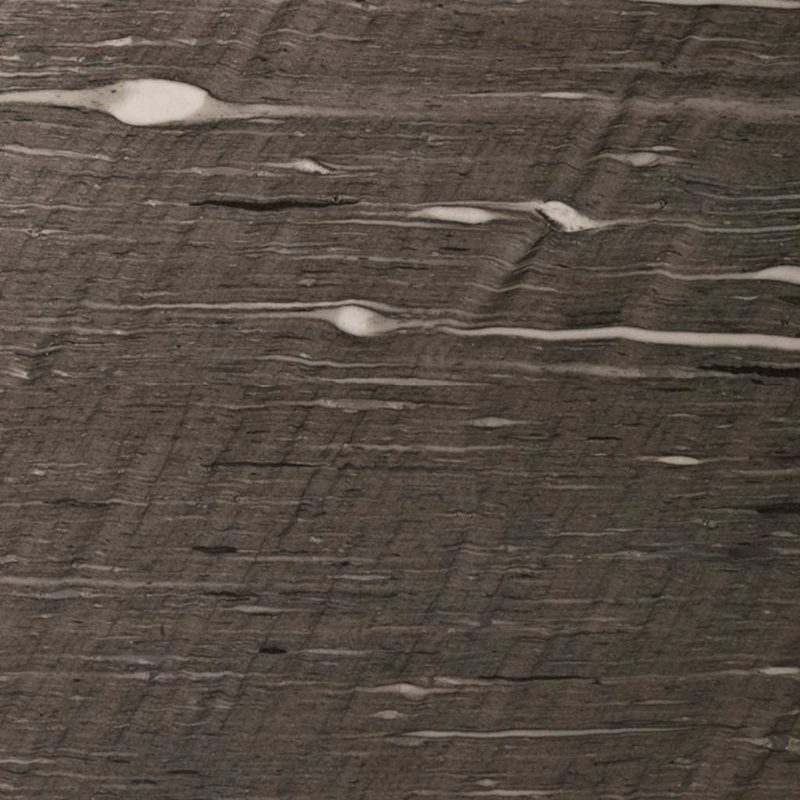
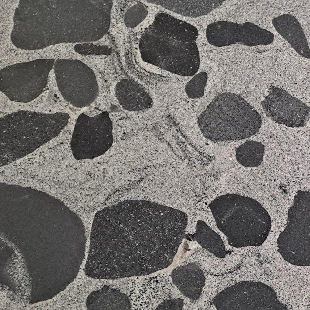
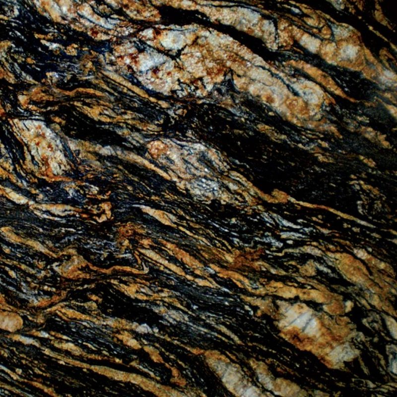
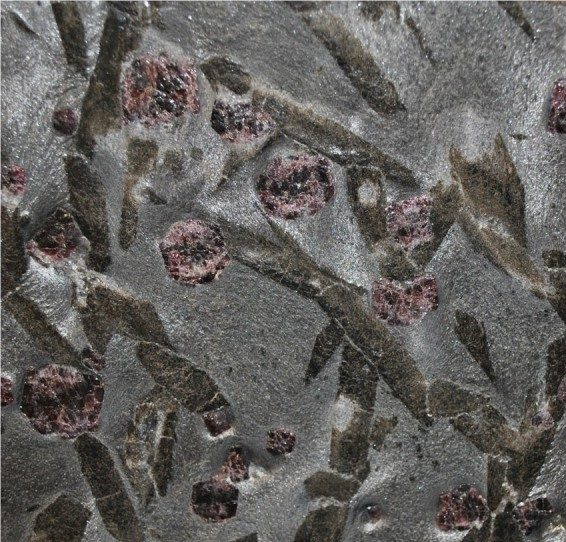
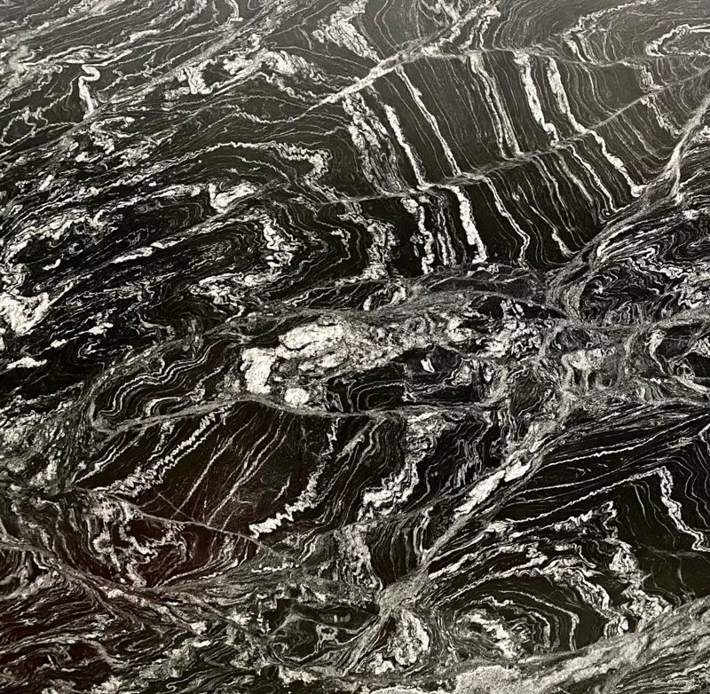
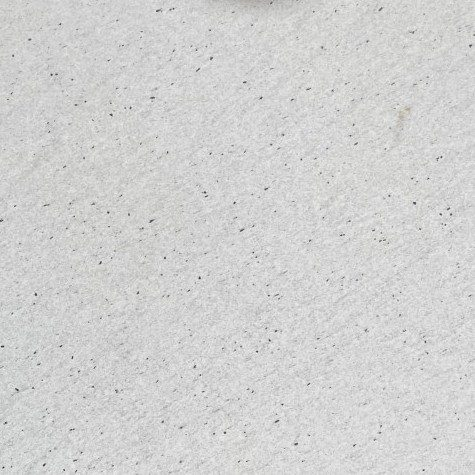
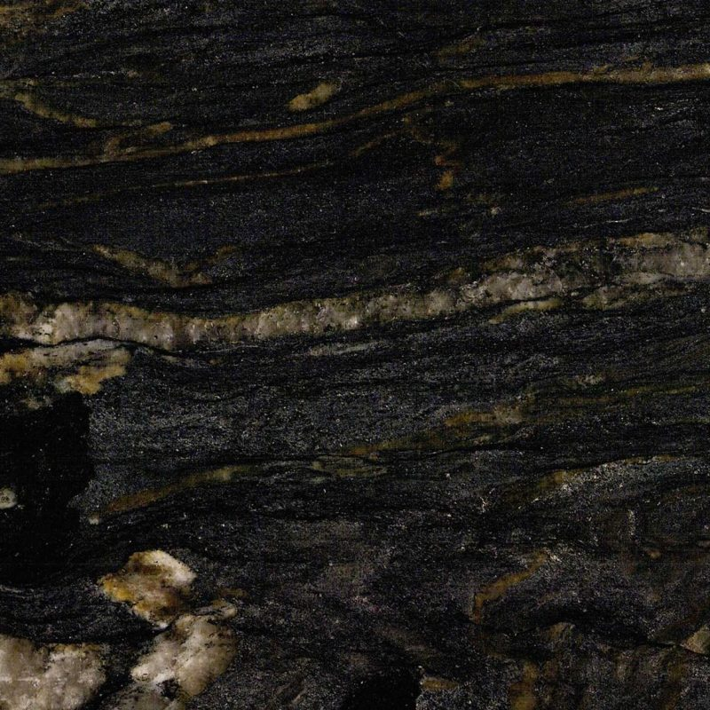
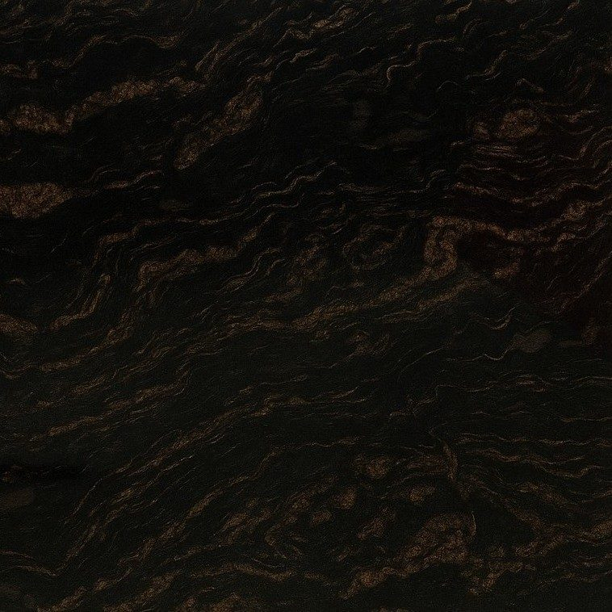
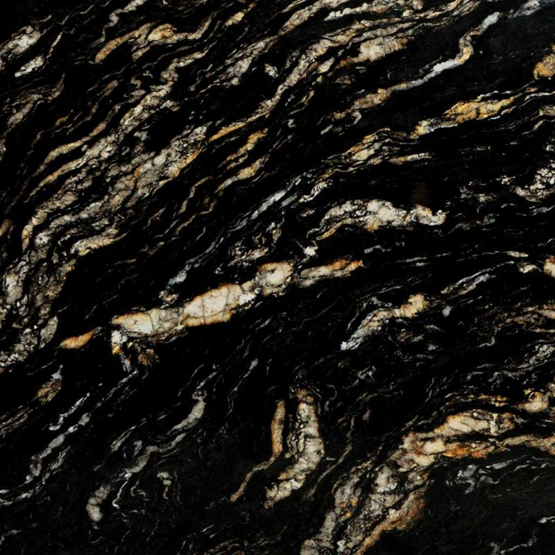
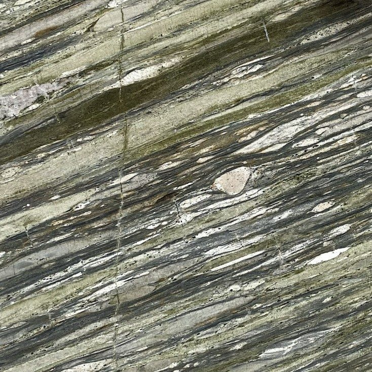

Cosentino — tratamento Texta
Granito Texta: o granito com toque de veludo
Passe a mão por um granito Texta e o seu interesse torna-se evidente: uma superfície mate, suave e sedosa, muito longe do polido brilhante habitual. Este tratamento da Cosentino dá ao granito um aspeto contemporâneo sem lhe retirar nada da robustez. Fabricamos bancadas em granito Texta por medida, em 16 cores.
A bancada em Granito Texta
Acabamento mate aveludado, de toque suave e sedoso, que preserva a robustez natural do granito. Uma escolha contemporânea e de alta gama.
Tratamento Texta by Cosentino
- Superfície mate aveludada
- Toque suave
- Dureza Mohs 6-7 preservada
- Antidedadas
Acabamentos e formatos
- Texta (mate aveludado)
- 20 · 30 mm
Cores disponíveis
16 cores disponíveis, que pode também ver ao vivo na nossa fábrica de Mafra, mediante marcação.
- Absolute BlackTexta mate aveludadoPreto absoluto com toque de veludo · 20/30 mm
- Baltic BrownTexta mate aveludadoCastanho-escuro com tratamento Texta · 20/30 mm
- Blanc CristalTexta mate aveludadoBranco cristal com toque de veludo · 20/30 mm
 Antique BrownTexta mate aveludadoCastanho-dourado caramelo com tratamento Texta · 20/30 mm
Antique BrownTexta mate aveludadoCastanho-dourado caramelo com tratamento Texta · 20/30 mm Verde UbatubaTexta mate aveludadoVerde profundo com tratamento Texta · 20/30 mm
Verde UbatubaTexta mate aveludadoVerde profundo com tratamento Texta · 20/30 mm Azul Aran®Texta mate aveludadoGranito Azul Aran® com tratamento Texta · azul-acinzentado · 20/30 mm
Azul Aran®Texta mate aveludadoGranito Azul Aran® com tratamento Texta · azul-acinzentado · 20/30 mm
Brown SilkAmaciado · Couro · PolidoCastanho quente com ondulações sedosas douradas e creme.
DalmataAmaciado · Couro · PolidoBranco com manchas pretas ao estilo dálmata.
MagmaAmaciado · Couro · PolidoPreto e castanho com veios quentes dourados.
MeteoroAmaciado · Couro · PolidoPreto profundo com veios claros e brilhos prateados e dourados.
Noir CaosAmaciado · Couro · PolidoPreto com veios cinzentos e brancos desordenados.
Rebel WhiteAmaciado · Couro · PolidoBranco com veios cinzento-escuros marcados.
TitaniumAmaciado · Couro · PolidoPreto com volutas douradas e brancas.
Titanium Cheyenne BarrocoAmaciado · Couro · PolidoCinzento-acastanhado escuro com arabescos creme e dourados.
Titanium GoldAmaciado · Couro · PolidoPreto intenso com veios dourados marcados.
Tropical FashionAmaciado · Couro · PolidoAntracite com véus cinzento-claros e brancos.
Ambientes

Cozinha de design escuraAmbiente em granito preto mate 
Cozinha luminosaAmbiente em granito claro 
Casa de banhoAmbiente em granito castanho
Porquê prescrever granito Texta
O granito Texta conquista primeiro pelo toque. O acabamento mate aveludado dá vontade de passar a mão pela bancada e muda a perceção da pedra: os cristais continuam visíveis, mas sem reflexos, como esbatidos.
É também uma escolha prática. Num granito preto polido, todas as dedadas se veem; no Texta, a superfície é conhecida por resistir às dedadas e as marcas do dia a dia passam discretas. A pedra mantém a dureza Mohs de 6 a 7 e a resistência ao calor, ideal junto ao fogão.
O granito Texta está disponível em 20 ou 30 mm. Combina particularmente bem com frentes mate, madeira em bruto, aço escovado e cozinhas de estilo minimalista ou industrial. Transformamo-lo segundo os seus desenhos, com recortes, arestas e acabamento manual.
Cores de granito Texta: orientar a escolha
O acabamento Texta transforma os granitos clássicos. Absolute Black torna-se um preto profundo com toque de veludo, sem os reflexos de um polido: é a referência para uma cozinha preta mate. Titanium e Titanium Gold, com veios marcados, ganham um aspeto mais suave e sofisticado.
Para uma cozinha clara, Rebel White e Blanc Cristal oferecem fundos luminosos, enquanto Dalmata, salpicado de preto, traz um toque gráfico. Os tons quentes, como Brown Silk, Antique Brown ou Baltic Brown, combinam com madeiras escuras. Azul Aran®, azul acinzentado, dá uma ilha muito bonita.
O acabamento mate muda a perceção das cores face a uma amostra polida: para validar a cor com o seu cliente, baseie-se sempre numa amostra ou chapa em acabamento Texta.
As suas perguntas
O granito Texta é mais difícil de limpar do que um granito polido?
Não, limpa-se da mesma forma, com água morna e sabão suave e uma esponja não abrasiva. A superfície mate disfarça melhor as dedadas do que um polido. Como em qualquer acabamento mate, um resíduo de gordura pode ver-se à luz rasante: uma passagem de microfibra ligeiramente húmida fá-lo desaparecer. Devem evitar-se decapantes e cremes abrasivos.
Granito Texta ou granito amaciado: qual a diferença?
Ambos são mate, mas não da mesma forma. O amaciado obtém-se com um polimento interrompido antes do brilho: é sóbrio e natural. O Texta é um tratamento específico da Cosentino que dá um toque aveludado e sedoso, ainda mais suave, e uma superfície menos sensível às dedadas. O melhor é comparar as duas amostras com a ponta dos dedos, com o seu cliente.
Envie-nos os seus desenhos
Desenhos cotados, ficheiros técnicos, material e acabamentos: analisamos o seu pedido e respondemos em 48 horas úteis.